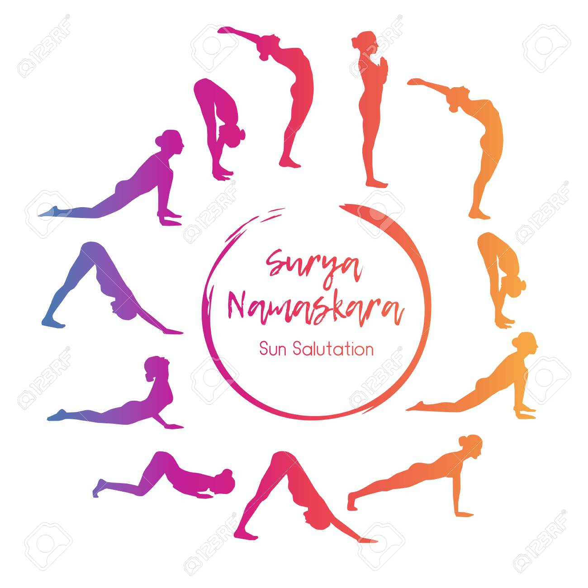

About
In Hindu mythology, the sun god, Surya, is worshipped as a symbol of health and immortal life. The Rig Veda declares that “Surya is the Soul, both of the moving and unmoving beings”. The Sun Salutation originated as a series of prostrations to the sun. Traditionally, it is performed at dawn, facing the rising sun. In time, each of the twelve positions came to have its own mantra, each celebrating an aspect of the sun’s divinity.
The Sun Salutation is a graceful sequence of twelve positions performed as one continuous exercise. Each position counteracts the one before, stretching the body in a different way and alternately expanding and contracting the chest to regulate the breathing. Practised daily, it brings great flexibility to spine and joints and keeps the waist trim. It limbers up the whole body in preparation for the asanas (postures).

Sun Salutation A — Surya Namaskara A
There are many variations of Sun Salutations. The sequence presented below is often referred to as "Sun Salutation A" (Surya Namaskara A). It includes the basic components of a Sun Salutation as understood in most styles of yoga. Always breathe through your nose only, as this warms the air and provides a meditative aspect to your practice. If you’re struggling to breathe, ease up a bit. Always work within your own range of limits and abilities.
- Standing Mountain Pose — Tadasana
- Upward Salute — Urdhva Hastasana
- Standing Forward Fold — Uttanasana
- Half Standing Forward Fold — Ardha Uttanasana
- Four-Limbed Staff Pose — Chaturanga Dandasana
- Upward-Facing Dog Pose — Urdhva Mukha Svanasana
- Downward-Facing Dog Pose — Adho Mukha Svanasana
- Half Standing Forward Fold — Ardha Uttanasana
- Standing Forward Fold — Uttanasana
- Upward Salute — Urdhva Hastasana
- Mountain Pose — Tadasana
Why do people practice 108 Sun Salutations?
It is believed that the fire (internal heat) that you build during this practice is cleansing, detoxifying, and gets you more in touch with yourself. There are many benefits to practicing 108 Sun Salutations.
Move Energy
Sun Salutations heat the body and activate Prana, or upward energy. You’ve probably heard in yoga class that the active parts of class (like a Vinyasa flow) help create and move energy and stuck emotions. The slower parts of class (like hip openers and reclined poses) help release energy and emotions that no longer serve you.
Surrender
During 108 Sun Salutations, you will at some point think, “Why did I sign up for this?” If you keep going, you will find a state of ease, and even a sense of flow. You will surrender to the process, acknowledge what arises emotionally, and then let it go. When you finish, you will feel lighter and find meaning in this ancient ritual.